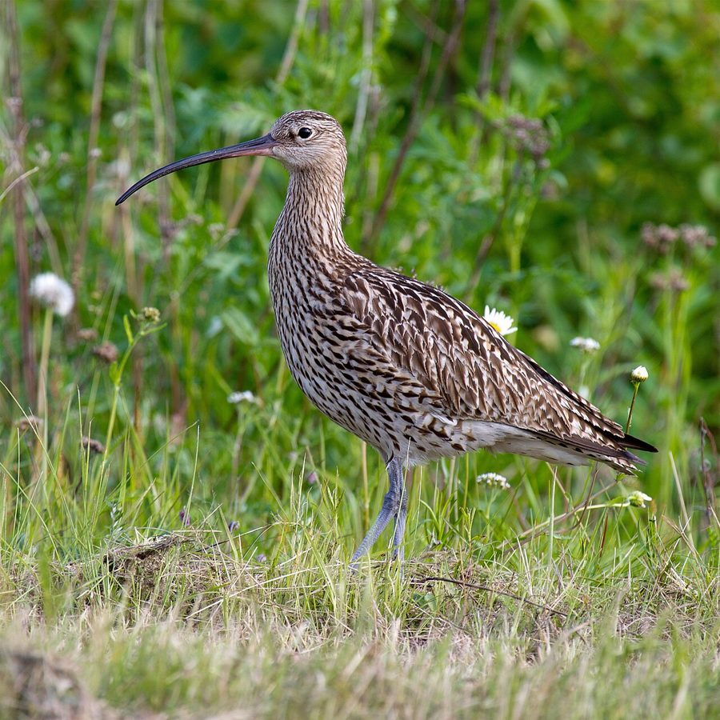

यूरेशियन कर्ल्यूEurasian Curlew
Numenius arquata · Scolopacidae · BRD-0251

- Scientific name वैज्ञानिक नाम
- Numenius arquata (Linnaeus, 1758)
- Family कुल
- Scolopacidae
- Hindi हिंदी
- यूरेशियन कर्ल्यू
- Local names स्थानीय नाम
- eurasian curlew, curlew
- Status here यहाँ की स्थिति
- native
- Movement आवागमन
- Winter visitor
- Known from कहाँ दर्ज
- Others have published records from the Basti–Ayodhya districts बस्ती–अयोध्या के ज़िलों से दूसरों के प्रकाशित अभिलेख
- IUCN IUCN
- NT
- Review समीक्षा
- audited and independently read
When to look कब देखें
Winter visitor शीतकालीन प्रवासी. Expected mainly in September, October, November, December, January, February, March, April, May. मुख्यतः सितंबर, अक्टूबर, नवंबर, दिसंबर, जनवरी, फ़रवरी, मार्च, अप्रैल, मई में अपेक्षित।
Arrives in September–October from breeding grounds in northern Eurasia; departs by April–May. Ali & Ripley (1968) and Handbook of the Birds of the Western Palearctic document timing. All migrants and visitors →
Tell it apart from इनसे अलग पहचानें
यूरेशियन कर्ल्यू / Eurasian Curlew
Numenius arquata (Linnaeus, 1758) — Scolopacidae
यूरेशियन कर्ल्यू — यह एक बड़ी, लंबी-चोंच वाली शीतकालीन प्रवास करने वाली चिड़िया है जो पूर्वी उत्तर प्रदेश के दलदली इलाकों में सितंबर से मई तक दिखती है। इसकी विशाल, नीची झुकी हुई चोंच और भूरी मोटली पंखें इसे तुरंत पहचान देती हैं। यह अकेले या छोटे झुंड में गीली मिट्टी में चोंच डालकर कीड़े खोजता है। इसकी विशिष्ट सीटी जैसी आवाज़ सर्दियों के दलदलों में सुनाई देती है।
Quick Identification त्वरित पहचान
| Feature | Description |
|---|---|
| Size | Large wader; 50–66 cm long |
| Bill | Very long, decurved downward, pointed; signature feature |
| Plumage | Mottled brown; streaked appearance |
| Legs | Long, greyish-green |
| Call | Distinctive rising whistle: "cur-LEW" or "cur-lee" |
Field tip: In wetlands and marshes, look for a large brown wader with an exceptionally long, decurved bill. The bill is often held tilted downward. Usually solitary or in small groups. The distinctive whistling call "cur-LEW" is often heard before the bird is seen. Probes mud methodically for invertebrates.
हिंदी — कैसे पहचानें:
बहुत लंबी, नीची झुकी हुई चोंच।
भूरी, धारीदार पंखें।
दलदली जगहों में दिखता है।
तीव्र सीटी जैसी आवाज़ — "कर-ल्यू"।
Morphology आकारिकी
Biometrics:
| Measurement | Range |
|---|---|
| Total length | 500–660 mm |
| Wing (flattened chord) | 300–330 mm |
| Tail | 90–110 mm |
| Bill | 140–200 mm (decurved) |
| Tarsus | 75–90 mm |
| Weight | 490–1360 g |
Size: 50–66 cm long; wingspan 80–105 cm. Weight 490–1360 g, females larger.
Plumage: Mottled brown overall, with buff and dark streaking. Head buff with brown crown-stripe. Supercilium (eyebrow) buff. Neck streaked buff and brown. Back mottled brown with darker streaks. Rump white with brown barring. Upper tail-coverts white, forming a distinctive pattern in flight. Wings brown with pale fringes. Underparts buff-white with brown streaking on breast and flanks. Tail buff with brown barring.
Bill: Exceptionally long, slightly to moderately decurved, pointed, dark at tip. The most distinctive feature; used for probing deep into mud.
Legs and feet: Long, greyish-green; four toes.
Eyes: Dark brown.
Sexual dimorphism: Females larger overall, with longer bills; subtle plumage differences.
Juveniles: Slightly buffer; bill proportionally shorter than adults.
Vocalisations. Call repertoire:
- Advertising and contact call: Distinctive loud rising whistle cur-LEW or cur-lee, given in flight and at rest; frequency around.
- Alarm call: Sharp, loud calls when disturbed.
- Other calls: Harsh chatter and chuckling notes.
हिंदी: तीव्र सीटी जैसी आवाज़ — "कर-ल्यू"। घबराहट में कठोर आवाज़।
Behaviour & Ecology व्यवहार और पारिस्थितिकी
Invertebrate feeder: Eurasian Curlews feed on invertebrates probed from mud:
- Aquatic insect larvae (dipteran larvae, mayfly nymphs)
- Small crustaceans (amphipods, isopods)
- Earthworms
- Small mollusks (snails, small clams)
- Occasionally small fish fry
Feeding behaviour: Wade in shallow water or on mudflats, probing methodically with long bill into soft mud and sediment. Tactile feeders; locate prey by touch. Feed both day and night in response to tidal changes.
Social behaviour: Solitary or in small loose groups of 2–10 birds. Less gregarious than many waders.
Flight: Strong, direct flight; often fly at high altitude during migration.
Predators: Large eagles, sparrowhawks; generally too large for most predators as adults.
हिंदी: अकेला या छोटे झुंड में रहता है। दलदल में चोंच डालकर कीड़े खोजता है। सर्दियों में आता है।
Life Cycle / Phenology जीवन चक्र
Winter visitor: Breeds in northern Eurasia; arrives September–October, departs April–May.
Arrival and departure: First birds arrive early September; numbers peak November–January; departure March–May.
Breeding: Does not breed in India; breeding grounds in tundra and moorlands of northern Europe and Siberia.
Moult: Post-breeding moult occurs on breeding grounds before migration.
Roosts: Nocturnal roosts on safe open water or sandbanks; diurnal feeding in wetlands.
हिंदी: सितंबर में आता है, मई तक रहता है। अपने देश में अंडे देता है। दलदलों पर दिन बिताता है।
Host Plants or Prey आहार
| Prey Type | Examples | Feeding Behaviour |
|---|---|---|
| Aquatic larvae | Dipteran larvae, mayfly nymphs | Probe deeply into mud |
| Crustaceans | Amphipods, small prawns | Sift from mud and water |
| Earthworms | Various species | Extract from soft soil |
| Small mollusks | Snails, small clams | Pick or probe from mud |
हिंदी: कीड़े, केंचुए, छोटे जानवर खाता है। दलदली मिट्टी से निकालता है।
Predators / Natural Enemies शत्रु
- Avian predators: Peregrine Falcon
- Mammalian predators: Jackals, wild dogs
- Parasites: Avian helminths, ectoparasites
हिंदी: बड़ी शिकारी चिड़ियाँ इसका शिकार करती हैं।
Agricultural / Human Relevance कृषि प्रासंगिकता
Ecological benefit: Feeds on aquatic insect larvae and invertebrate pests.
Protected status: Protected under the Wildlife (Protection) Act 1972.
Conservation concern: Listed as Near Threatened (NT) on IUCN Red List due to global population declines. Habitat loss (wetland drainage) is a major threat.
हिंदी: यह विधि अधिनियम 1972 के अंतर्गत संरक्षित है। दलदली इलाकों की कमी से खतरे में है।
Expected Locally स्थानीय रूप से अपेक्षित
Not a field record. Written from published accounts for eastern Uttar Pradesh. No confirmed local sighting yet — if you have seen it, that is what the atlas needs.
अभी तक स्थानीय पुष्टि नहीं। यह विवरण प्रकाशित स्रोतों से है, किसी अवलोकन से नहीं।
This species is NOT a field record. Based on published sources for eastern UP.
Winter range: Expected September to May in wetlands and mudflats.
Habitat preference: Large marshes, floodplain lakes, mudflats, river channels.
Peak occurrence: November–February.
GBIF records: GBIF holds published records from these districts.
What a first record would be: Dated photograph with GPS coordinates and date through the About page.
हिंदी: यह पक्षी स्थानीय रूप से अपेक्षित है। दलदली इलाकों में सितंबर से मई तक दिखता है। पहला रिकॉर्ड के लिए फोटोग्राफ चाहिए।
Distribution वितरण
Global range: Breeds in northern Eurasia; winters in Africa, southern Asia, and southern Europe.
In India: Distributed as a winter visitor in wetlands throughout the country.
In Uttar Pradesh: Widespread winter visitor in marshes and wetlands.
In Basti district / eastern UP: Regular winter visitor in floodplain wetlands; September to May with peak November–February.
Research Questions शोध प्रश्न
- What are the breeding grounds and migration routes?
- How do seasonal wetland changes affect curlew distribution and density?
- What is the dietary composition and invertebrate prey availability?
- क्या दलदली जगहों की कमी से इस चिड़िया की संख्या में कमी आई है?
- How do Eurasian Curlews select feeding sites and how do feeding rates change seasonally? (A child can observe and time feeding probes.)
- क्या जलस्तर के प्रबंधन से कुरलेव की सर्दी की आबादी प्रभावित होती है?
Similar Species मिलती-जुलती प्रजातियाँ
| Species | Key Difference | Hindi | Field Rule | |
|---|---|---|---|---|
| Whimbrel (Numenius phaeopus) | Smaller (40–46 cm); crown stripe present; shorter bill | छोटा चम्पूंड़ी | Whimbrel is smaller with prominent crown stripe and shorter bill. | |
| [[black_tailed_godwit\ | Black-tailed Godwit]] (Limosa limosa) | Longer legs; straighter, shorter bill; different structure | कंडिला | Black-tailed Godwit has straighter bill and longer legs; different body proportions. |
Field rule: Eurasian Curlew is distinguished by its very long, distinctly decurved bill (longer than head and neck combined) and mottled brown plumage. The large size and distinctive "cur-LEW" call are diagnostic. No crown stripe unlike Whimbrel.
Taxonomy & Classification वर्गीकरण
Original description. Described by Linnaeus in 1758 as Scolopax arquata. Type locality is northern Europe.
Subspecies. Two subspecies; N. a. arquata (Europe to western Russia) and N. a. orientalis (eastern Russia) occur in India, with N. a. arquata predominant.
Family and order placement. Order Charadriiformes; family Scolopacidae (sandpipers, godwits, curlews).
IUCN status rationale. Near Threatened due to global population declines. Wetland loss and drainage are major threats.
हिंदी: विश्वभर में पाई जाती है। भारत में सर्दियों में आती है। संख्या घट रही है।
Photo Gallery फोटो गैलरी
No photos yet — add field photos to media/species/eurasian_curlew/ and run node scripts/sync_photos.js.
Wanted photos:
- Probing mud with long bill
- In flight showing white rump
- Close-up of head and bill
- Roosting on mudflat
- Calling bird
References संदर्भ
- Linnaeus, C. (1758). Systema Naturae per Regna Tria Naturae (10th edn). Laurentii Salvii, Holmiae. Vol. 1, p. 243.
- Ali, S. & Ripley, S. D. (1968). Handbook of the Birds of India and Pakistan. Vol. 3 (Warblers to Finches). Oxford University Press, Delhi. Pp. 214–217.
- Cramp, S. & Simmons, K. E. L. (1983). Handbook of the Birds of Europe, the Middle East and North Africa: The Birds of the Western Palearctic. Vol. 3. Oxford University Press. Pp. 438–451.
- Rasmussen, P. C. & Anderton, J. C. (2005). Birds of South Asia: The Ripley Guide. Vol. 2. Smithsonian Institution Press, Washington, DC. Pp. 106–107.
- GBIF Occurrence Data — Numenius arquata, India.
- IUCN Red List (2021). Numenius arquata — BirdLife International assessment. IUCN, Cambridge. Status: Near Threatened.
Source file: species/fauna/birds/eurasian_curlew.md